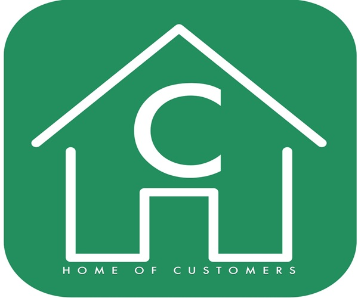

Career Aspirations
Plans and ambitions
The aim is to become computer and mobile systems for company, hence software designer. I aspire to work in an IT environment that enables me to utilize my diverse skill set. With expertise in designing websites, photography, IT sales (online sales), and Excel, I am eager to contribute my talents to a dynamic IT team. Whether it is creating visually appealing and user-friendly websites, capturing captivating photographs, driving online sales through effective marketing strategies, or leveraging Excel to analyse and present data, I am confident in my ability to excel in these tasks. By combining my passion for technology and my diverse skill set, I am ready to make a meaningful impact in the IT field.
One of my primary goals is to develop a friendly and effective communication system between businesses and their customers. Recognizing the importance of seamless and efficient interactions, I am driven to create innovative solutions that enhance the customer experience. I envision a communication system that fosters trust, transparency, and satisfaction, bridging the gap between businesses and their clientele. With my passion for user-cantered design and my ability to understand the needs of both businesses and customers, I am determined to create a communication system that simplifies processes, resolves issues promptly, and establishes strong and lasting relationships.
The logo below represents an app I am currently working on, dedicated to revolutionizing the way businesses and customers connect and engage with one another.
 My plans for my career development, which have been inspired by insights gained from one of our guest speakers who delivered a lecture on programming, communication, and business. As time passed, I found myself increasingly drawn to the idea of embarking on a coding project that aligns with my interests and aspirations. That's when I decided it was time to bring my ideas to life. Currently, I'm working on an application using Python as the coding language. While the app is functional, I recognize the need for improvements and enhancements to fully realize its potential.
Yusuf Muhammad Rajah